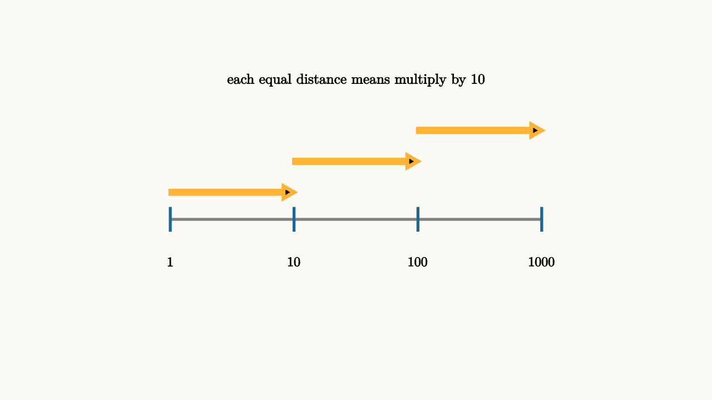

Logarithms Turn Multiplication Into Distance
Imagine trying to compare three sound systems by power. One is rated at $10$ watts, another at $100$ watts, and another at $1000$ watts. On an ordinary ruler, the jump from $10$ to $100$ looks like $90$ units, while the jump from $100$ to $1000$ looks like $900$ units. The second jump looks ten times larger.
Yet both jumps have the same multiplicative meaning. Each one says "times ten." A normal number line measures difference. A logarithmic line measures ratio.
That is the reason logarithms exist in school algebra. A logarithm answers the question:
The number $\log_b N$ is the exponent $x$ that turns the base $b$ into $N$. For base $10$,
because $10^3=1000$. The logarithm is a coordinate on an exponent scale.

source
background = [0.985, 0.98, 0.955, 1]
camera = Camera(4.6b)
let P = |x| [-2.4 + 1.6 * x, -0.25, 0]
let Tick = |x, label, col| block {
. stroke{col, 3} Line(start: P(x) + [0, -0.16, 0], end: P(x) + [0, 0.16, 0])
. center{P(x) + [0, -0.55, 0]} color{BLACK} Text(label, 0.62)
}
mesh diagram = block {
. stroke{GRAY, 3} Line(start: P(0), end: P(3))
. Tick(0, "1", BLUE)
. Tick(1, "10", BLUE)
. Tick(2, "100", BLUE)
. Tick(3, "1000", BLUE)
. stroke{ORANGE, 4} Arrow(start: P(0) + [0, 0.35, 0], end: P(1) + [0, 0.35, 0])
. stroke{ORANGE, 4} Arrow(start: P(1) + [0, 0.75, 0], end: P(2) + [0, 0.75, 0])
. stroke{ORANGE, 4} Arrow(start: P(2) + [0, 1.15, 0], end: P(3) + [0, 1.15, 0])
. center{[0, 1.55, 0]} color{BLACK} Text("each equal distance means multiply by 10", 0.66)
}The picture gives the main law. On the log scale, multiplying by $10$ moves one step to the right. Multiplying by $100$ moves two steps. Multiplying by $1000$ moves three steps. Multiplication has become motion by distance.
For any positive $a$ and $c$,
The algebra proof is short once the meaning is clear. Suppose
Then
So the exponent that reaches $ac$ is $u+v$. That is the log of $a$ plus the log of $c$.
Here is the teaching point hidden inside the proof. The law is saying that multiplication acts like translation once you measure position by exponent. If $a$ is three powers of $10$ from $1$, and $c$ is two powers of $10$ from $1$, then $ac$ is five powers of $10$ from $1$. The logarithm is the coordinate system that records those power-distances.
This helps with estimates. Since
we get
So doubling a quantity moves it about $0.3$ units on a base $10$ log scale. Ten doublings move about $3$ units, which means multiplying by about $1000$. That is why computer scientists remember that $2^{10}$ is roughly a thousand and $2^{20}$ is roughly a million. They are moving by equal log steps.
This is more than a trick for expanding homework expressions. It explains why logarithms appear in sound, earthquakes, chemistry, astronomy, and computer science. When a subject cares about ratios across many sizes, a log scale gives the drawing a fair ruler. A sound that carries $100$ times the intensity is two equal steps above the original on a base $10$ log scale. A hydrogen ion concentration that changes by a factor of $10$ moves one pH unit. A data set whose values span from $1$ to $1,000,000$ becomes readable once powers, rather than differences, set the spacing.
The laws for powers become laws for motion:
Raising to a power stretches the log distance. A square doubles the distance from $1$. A square root cuts that distance in half.
source
background = [0.985, 0.98, 0.955, 1]
camera = Camera(4.8b)
let X = |value| -2.2 + 1.05 * log(value, 10)
let Ruler = || block {
. stroke{GRAY, 2.5} Line(start: [-2.2, -0.6, 0], end: [2.0, -0.6, 0])
for (entry in [[1, "1"], [10, "10"], [100, "100"], [1000, "1000"]]) {
let x = X(entry[0])
. stroke{GRAY, 2} Line(start: [x, -0.78, 0], end: [x, -0.42, 0])
. center{[x, -1.08, 0]} color{BLACK} Text(entry[1], 0.62)
}
}
let ProductScene = |a, c| block {
let xa = X(a)
let xc = X(c)
let xp = X(a * c)
. Ruler()
. stroke{BLUE, 5} Arrow(start: [X(1), 0.05, 0], end: [xa, 0.05, 0])
. stroke{ORANGE, 5} Arrow(start: [xa, 0.45, 0], end: [xp, 0.45, 0])
. fill{GREEN} center{[xp, -0.6, 0]} Circle(0.08)
. center{[0, 1.45, 0]} color{BLACK} Text("log distance of a times c is two distances added", 0.62)
. center{[xa / 2 + X(1) / 2, 0.3, 0]} color{BLUE} Text("log a", 0.62)
. center{[(xa + xp) / 2, 0.7, 0]} color{ORANGE} Text("log c", 0.62)
}
"one factor"
mesh scene = ProductScene(a: 10, c: 10)
play Write(0.8)
"same second distance"
scene = ProductScene(a: 10, c: 100)
play Trans(1.2)
"product lands farther"
scene = ProductScene(a: 100, c: 10)
play Trans(1.2)The inverse relationship with exponentials matters just as much. The exponential function starts with an exponent and returns a size:
The logarithm starts with a positive size and returns the exponent:
That is why logarithmic equations ask for domain care. The expression $\log_b(x-2)$ only makes sense when
So the domain is $x>2$. Algebra with logarithms always carries this quiet condition: the input must be positive, and the base must be positive and different from $1$.
Once that condition is respected, logarithms are reversible. If
then
provided $A$ and $C$ are positive. The logarithm is a coordinate system for the positive number line, and equal coordinates name the same point.
That reversibility lets us solve exponential equations without guessing. Suppose a population model says
Divide by $500$:
Now take logs:
So
The base of the logarithm does not matter in this ratio as long as the same base is used on top and bottom. We are asking how many $1.08$-steps fit into one doubling-step. Logs turn that question into a ratio of distances.
The common mistake is to treat log rules as syntax moves without checking meaning. For example,
does not split into $\log_b a+\log_b c$. Addition inside the original scale is a different operation. The log ruler is built for ratios, so it respects multiplication and powers. It has no simple universal way to turn ordinary addition into a smaller expression. This is why $\log(1000\cdot 1000)$ is easy, while $\log(1000+1000)$ asks for a different kind of information.
The lesson to keep is geometric. Ordinary addition is distance on an ordinary line. Multiplication is distance on a logarithmic line. Logs let us use the familiar skills of adding and subtracting once the quantities themselves are built from ratios.